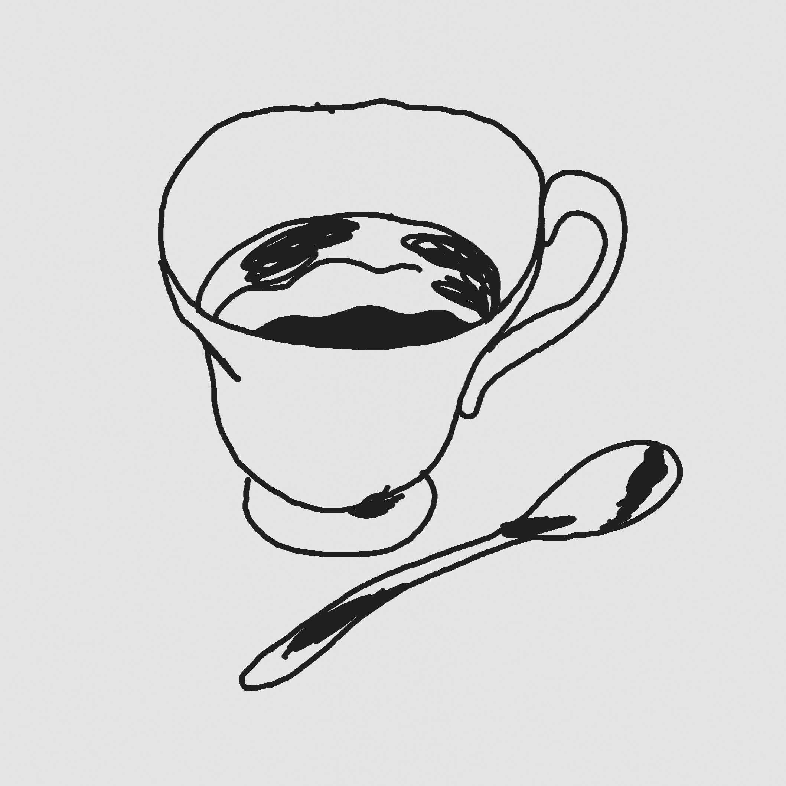
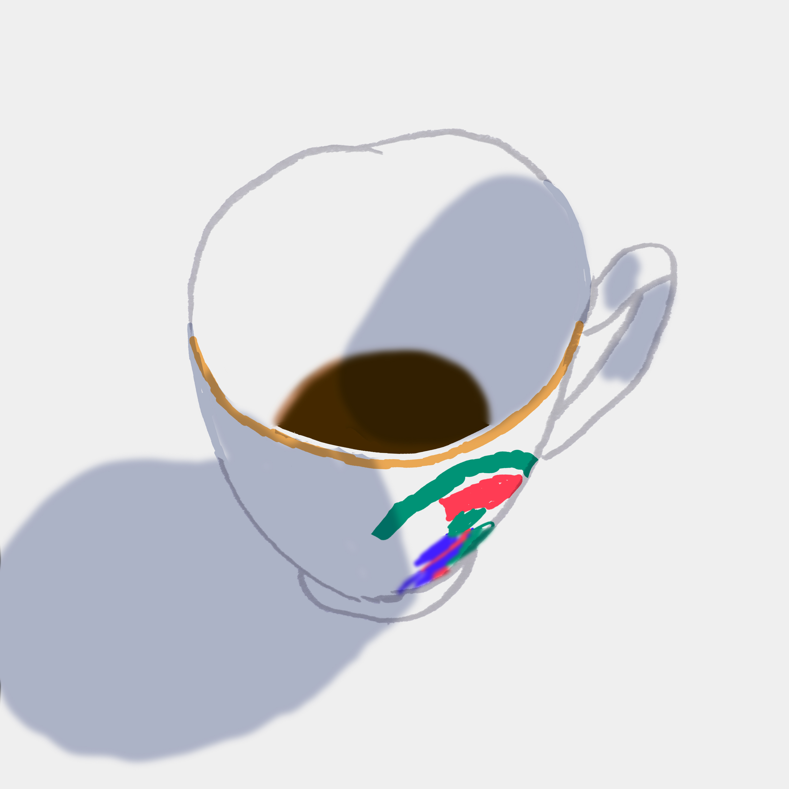
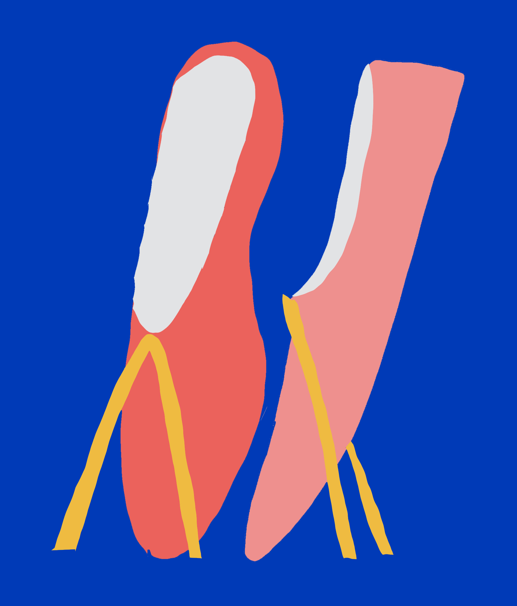
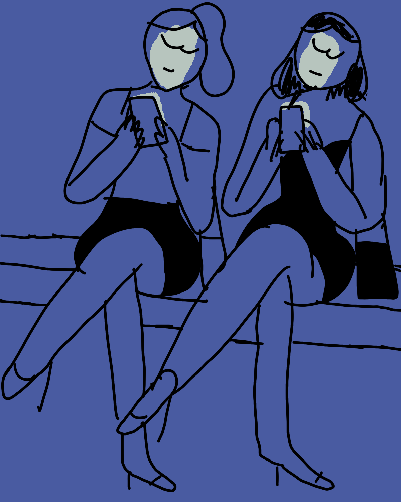
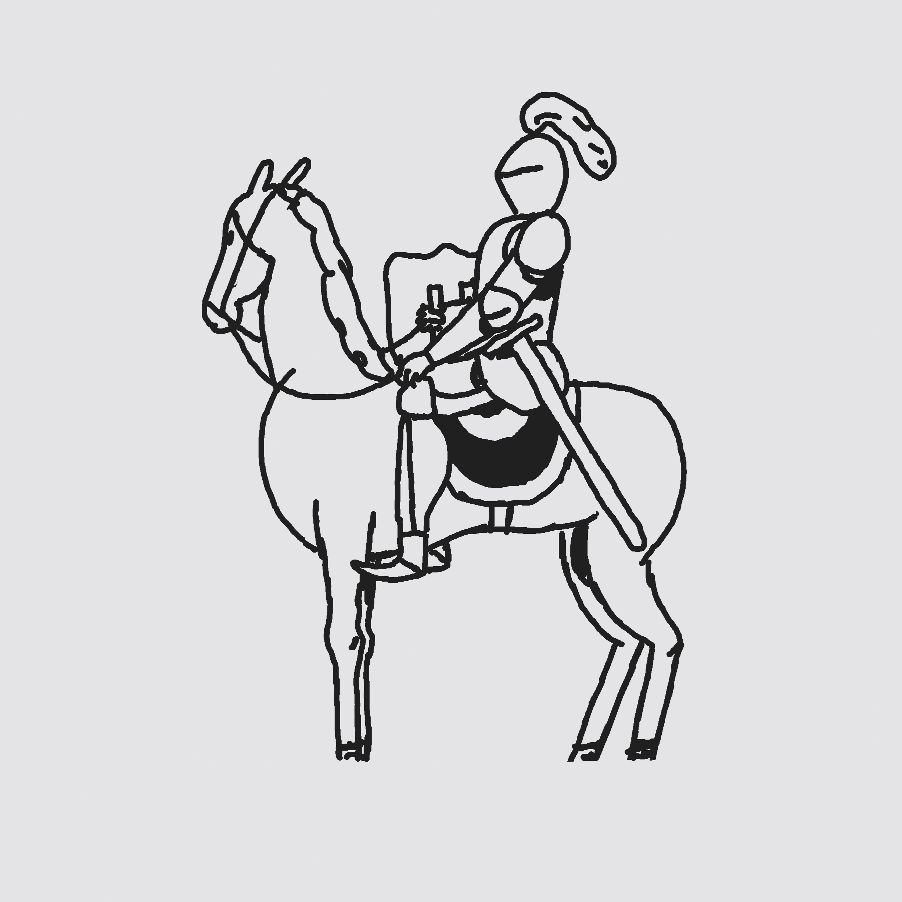
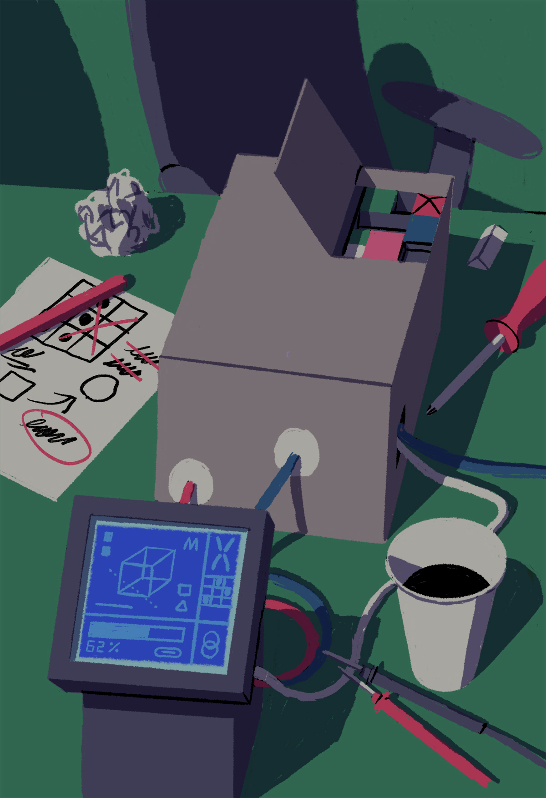

7/10/26 This is a new site! I just moved in so things are a bit empty, but I always say that an outdated portfolio is a good sign that the artist is happy and busy with projects.
Recent work is posted on Instagram, YouTube is where I document my process, and I am setting up Substack to be where I go to distill some thoughts about image making in general.
The best way to reach me is email!
jamesnoellert@gmail.com
"The Space Explorers 3"
I have a project called "The Space Explorers" that I have been using to continue my education, learning about animation, production design, Blender, and lately I've been practicing my writing as I develop longer stories in this world. The current project is the fourth animation, and is a stand alone short (7 mins) called "His Important Computer". This video below is a cut of some footage from halfway through the production.
For more updates and process, I have been sharing things on instagram @largo.pictures
9/23/26 So this site is an experiment in just hosting images and html on github, and I am having fun with it. I always wanted my squarespace to look this simple and clean, but I was always fighting the convoluted menus of options. Maybe this is also an artist's statement?






